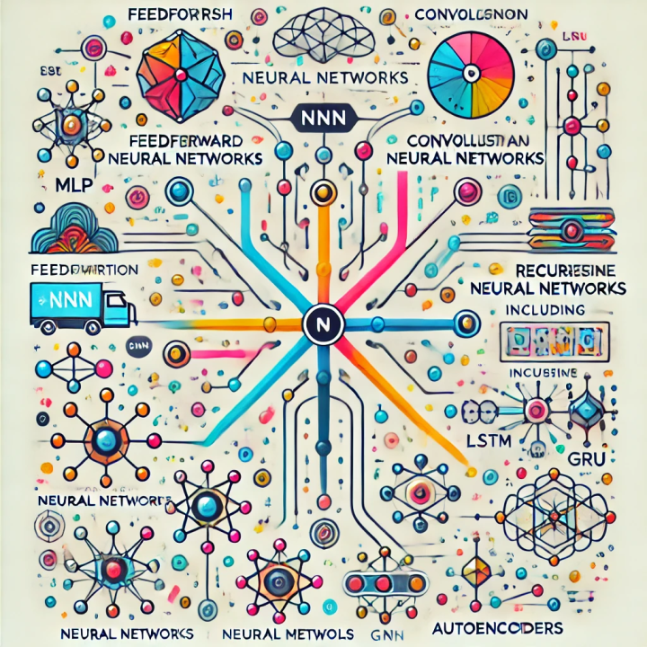

Artificial Intelligence
Artificial Intelligence (AI) refers to the simulation of human intelligence in machines programmed to think, learn, and make decisions. AI is transforming industries by automating complex tasks, enhancing decision-making, and enabling new technological breakthroughs. It powers applications like virtual assistants, autonomous vehicles, and predictive analytics.

Key Aspects of AI:
Machine Learning: Systems improve automatically by learning from data.
Natural Language Processing: Machines understand and respond to human language.
Computer Vision: AI interprets and processes visual data from the world.
Robotics: Intelligent robots perform tasks in real-time environments.
Ethical AI: Ensuring AI operates fairly and transparently.
Automation: Replacing repetitive manual tasks to increase efficiency.
Data Analysis: Extracting insights from large datasets for better decisions.
AI in Healthcare: Improving diagnosis and personalized treatment.
AI in Finance: Fraud detection, risk management, and trading algorithms.
Continuous Innovation: AI technology is evolving rapidly, creating new opportunities daily.